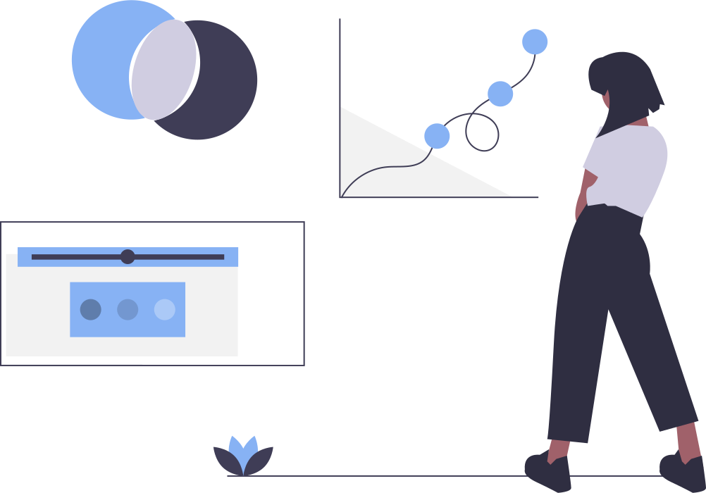

Clean Water PVD
Home
Research
Data
About
For any advocates in this space, we have collected a sink of data that may be helpful for your work.

Data Sources
Lead pipes map
RI lead poisoning data
Loan program zipcodes
Lead pipes map
RI lead poisoning data
Loan program zipcodes